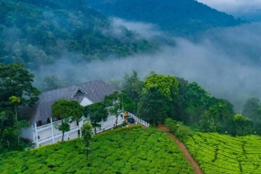
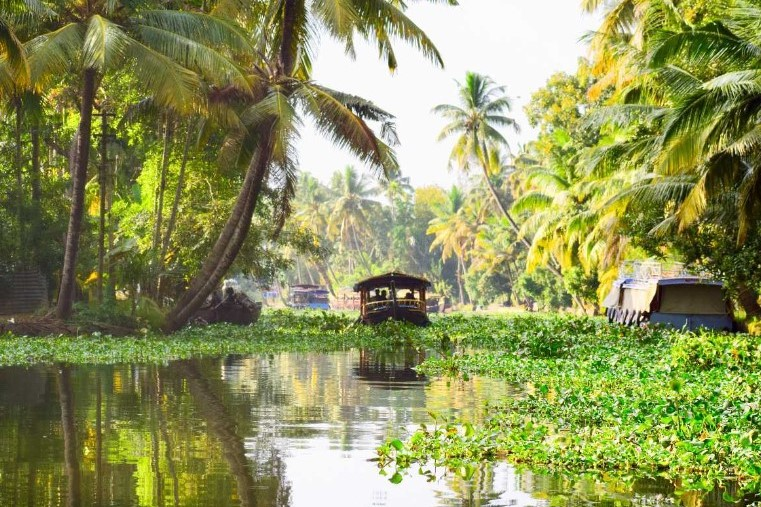

Places you can visit near Kerala:

Munnar
This is the most beautiful place yoy can vist in kerala.

Wayanad
Wayanad is also known as the Ooty of Kerala.
Kollam
Kollam is centre of cashew industry.

Alappuzha
Alleppey is known for its backwaters, beaches and canals.

Athirappilly Waterfalls
Kerala's most famous and largest waterfall at over 80 ft high.

Vazhachal Waterfalls
Vazhachal falls is a great scenic place in an area of forests.